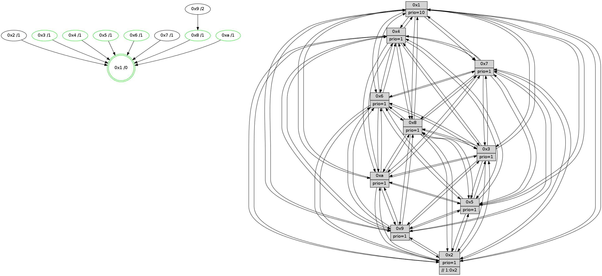

>> << IDX [start] -100 -25 -5 +0 +5 +25 +100 [990.32109499]
 Previous packets
----------------------------------------------------------------------
985.592311 beacon01(faad) #0 coord=01,02,03,04,05,06,07,0a,09,08 cycle=688.0ms assoc
-- color-indic=1 64 ba 47
985.602294 beacon02(faad) #0 coord=01,02,03,04,05,06,07,0a,09,08 cycle=688.0ms assoc 64 29 76
985.612292 beacon03(faad) #0 coord=01,02,03,04,05,06,07,0a,09,08 cycle=688.0ms assoc 64 53 3b
985.622293 beacon04(faad) #0 coord=01,02,03,04,05,06,07,0a,09,08 cycle=688.0ms assoc 64 24 d1
985.632295 beacon05(faad) #0 coord=01,02,03,04,05,06,07,0a,09,08 cycle=688.0ms assoc 64 5e 9c
985.642294 beacon06(faad) #0 coord=01,02,03,04,05,06,07,0a,09,08 cycle=688.0ms assoc 64 d0 4b
985.652293 beacon07(faad) #0 coord=01,02,03,04,05,06,07,0a,09,08 cycle=688.0ms assoc 64 aa 06
985.662301 beacon0a(faad) #0 coord=01,02,03,04,05,06,07,0a,09,08 cycle=688.0ms assoc 64 db 0d
985.672298 beacon09(faad) #0 coord=01,02,03,04,05,06,07,0a,09,08 cycle=688.0ms assoc 64 55 da
985.682301 beacon08(faad) #0 coord=01,02,03,04,05,06,07,0a,09,08 cycle=688.0ms assoc 64 2f 97
985.693565 [Hello(1): seq=539 sym=4,2,9,5,10,3,8,6,7 sysInfo=coloring-mode-on,ColoringModeRequestCalled stat=4:10,0,3,2/2:12,3,15,12/9:9,12,0,6/5:2,3,9,5/10:13,0,15,3/3:14,14,0,3/8:3,3,1,1/6:11,0,13,10/7:8,14,0,12]
985.697208 [Hello(3): seq=630 sym=1,7,6,2,4,8,9,10,5 sysInfo= stat=1:12,7,11,0/7:14,11,8,7/6:12,4,11,2/2:15,2,13,10/4:5,4,0,7/8:1,0,8,2/9:1,3,11,11/10:13,6,10,3/5:5,11,7,11]
985.699954 [Color(7) seq=213 @0:0 prio=1]
985.701254 [Color(4) seq=222 @0:0 prio=1]
985.702553 [Color(10) seq=234 @0:0 prio=1]
985.705242 [Color(8) seq=263 @0:0 prio=1]
985.707658 [Color(3) seq=259 @0:0 prio=1]
985.709222 [Hello(5): seq=630 sym=7,6,4,3,1,9,8,10,2 sysInfo=hasWarning stat=7:7,14,5,9/6:12,3,5,0/4:4,8,2,8/3:11,3,9,10/1:12,12,6,1/9:1,1,0,5/8:1,8,12,10/10:0,7,9,5/2:2,0,0,0]
985.716460 [Hello(6): seq=630 sym=2,3,5,4,7,9,8,10,1 sysInfo= stat=2:5,0,0,0/3:12,5,1,10/5:12,9,1,12/4:3,10,9,2/7:8,9,15,6/9:9,12,0,5/8:5,10,13,3/10:5,0,6,11/1:1,2,0,1]
985.719618 [Color(6) seq=262 @0:0 prio=1]
985.721849 [Hello(2): seq=626 sym=4,5,7,6,3,9,8,10,1 sysInfo=hasWarning stat=4:14,8,7,6/5:1,5,8,1/7:0,0,3,9/6:9,9,11,8/3:9,13,9,5/9:10,12,13,5/8:0,8,8,9/10:3,12,14,10/1:9,10,1,1]
----------------------------------------------------------------------
986.380440 beacon01(faad) #0 coord=01,02,03,04,05,06,07,0a,09,08 cycle=688.0ms assoc
-- color-indic=1 64 06 42
986.390424 beacon02(faad) #0 coord=01,02,03,04,05,06,07,0a,09,08 cycle=688.0ms assoc 64 95 73
986.400421 beacon03(faad) #0 coord=01,02,03,04,05,06,07,0a,09,08 cycle=688.0ms assoc 64 ef 3e
986.410422 beacon04(faad) #0 coord=01,02,03,04,05,06,07,0a,09,08 cycle=688.0ms assoc 64 98 d4
986.420422 beacon05(faad) #0 coord=01,02,03,04,05,06,07,0a,09,08 cycle=688.0ms assoc 64 e2 99
986.430422 beacon06(faad) #0 coord=01,02,03,04,05,06,07,0a,09,08 cycle=688.0ms assoc 64 6c 4e
986.440424 beacon07(faad) #0 coord=01,02,03,04,05,06,07,0a,09,08 cycle=688.0ms assoc 64 16 03
986.450428 beacon0a(faad) #0 coord=01,02,03,04,05,06,07,0a,09,08 cycle=688.0ms assoc 64 67 08
986.460428 beacon09(faad) #0 coord=01,02,03,04,05,06,07,0a,09,08 cycle=688.0ms assoc 64 e9 df
986.470429 beacon08(faad) #0 coord=01,02,03,04,05,06,07,0a,09,08 cycle=688.0ms assoc 64 93 92
986.482283 [Hello(8): seq=574 sym=5,2,3,4,9,6,7,10,1 sysInfo=hasWarning stat=5:5,4,5,12/2:5,0,14,5/3:7,14,14,12/4:1,0,14,8/9:14,8,3,1/6:8,3,13,10/7:14,14,4,1/10:12,8,6,1/1:12,3,15,0]
986.485304 [Hello(7): seq=630 sym=2,3,5,6,4,8,9,10,1 mpr= sysInfo=hasWarning stat=2:2,0,9,12/3:15,9,2,12/5:3,15,6,15/6:14,8,2,6/4:9,5,1,1/8:1,12,2,1/9:13,4,2,0/10:14,14,8,2/1:4,10,1,0]
986.488186 [Hello(10): seq=563 sym=6,2,3,8,7,5,9,4,1 sysInfo=hasWarning stat=6:10,7,2,4/2:11,15,13,4/3:4,1,9,8/8:8,5,5,2/7:0,1,2,1/5:7,0,4,12/9:14,8,2,0/4:8,3,7,7/1:7,0,6,1]
986.491657 [STC(1) #0.135 tree-change,inconsistent-stability,stable,to-color d=0]
986.494335 [Hello(9): seq=574 sym=2,5,3,4,7,6,8,10,1 sysInfo=hasWarning stat=2:3,7,15,3/5:11,6,13,3/3:3,6,13,12/4:1,5,11,7/7:2,9,15,9/6:5,1,5,8/8:14,13,0,3/10:6,6,2,1/1:15,2,2,1]
986.497239 [Color(1) seq=311 @0:0 prio=10]
986.502662 [Hello(4): seq=630 sym=5,7,6,2,3,9,8,10,1 sysInfo= stat=5:1,5,14,11/7:5,4,0,7/6:12,8,11,9/2:1,5,9,9/3:7,6,11,8/9:1,9,3,8/8:12,11,3,3/10:1,0,6,10/1:12,4,4,1]
----------------------------------------------------------------------
987.168572 beacon01(faad) #0 coord=01,02,03,04,05,06,07,0a,09,08 cycle=688.0ms assoc
-- color-indic=1 64 c2 4c
987.178555 beacon02(faad) #0 coord=01,02,03,04,05,06,07,0a,09,08 cycle=688.0ms assoc 64 51 7d
987.188555 beacon03(faad) #0 coord=01,02,03,04,05,06,07,0a,09,08 cycle=688.0ms assoc 64 2b 30
987.198556 beacon04(faad) #0 coord=01,02,03,04,05,06,07,0a,09,08 cycle=688.0ms assoc 64 5c da
987.208555 beacon05(faad) #0 coord=01,02,03,04,05,06,07,0a,09,08 cycle=688.0ms assoc 64 26 97
987.218556 beacon06(faad) #0 coord=01,02,03,04,05,06,07,0a,09,08 cycle=688.0ms assoc 64 a8 40
987.228556 beacon07(faad) #0 coord=01,02,03,04,05,06,07,0a,09,08 cycle=688.0ms assoc 64 d2 0d
987.238560 beacon0a(faad) #0 coord=01,02,03,04,05,06,07,0a,09,08 cycle=688.0ms assoc 64 a3 06
987.248563 beacon09(faad) #0 coord=01,02,03,04,05,06,07,0a,09,08 cycle=688.0ms assoc 64 2d d1
987.258561 beacon08(faad) #0 coord=01,02,03,04,05,06,07,0a,09,08 cycle=688.0ms assoc 64 57 9c
987.269826 [Hello(1): seq=540 sym=4,2,9,5,10,3,8,6,7 sysInfo=coloring-mode-on,ColoringModeRequestCalled stat=4:11,1,3,2/2:13,3,15,12/9:9,12,0,6/5:3,3,9,5/10:13,1,15,3/3:15,15,0,3/8:4,4,1,1/6:12,1,13,10/7:8,15,0,12]
987.273829 [Hello(5): seq=631 sym=7,6,4,3,1,9,8,10,2 sysInfo=hasWarning stat=7:8,14,5,9/6:13,4,5,0/4:5,8,2,8/3:11,3,9,10/1:12,13,7,1/9:2,1,0,5/8:2,8,12,10/10:1,7,9,5/2:3,0,0,0]
987.276301 [Hello(2): seq=627 sym=4,5,7,6,3,9,8,10,1 sysInfo=hasWarning stat=4:15,8,7,6/5:1,5,8,1/7:1,0,3,9/6:9,9,11,8/3:9,13,9,5/9:11,12,13,5/8:1,8,8,9/10:4,12,14,10/1:9,11,2,1]
987.279136 [STC(2)->1 #0.135 to-color d=1]
987.280503 [STC(8)->1 #0.135 tree-change,inconsistent-stability,stable,to-color d=1]
987.284109 [STC(7)->1 #0.135 to-color d=1]
987.286558 [Hello(6): seq=631 sym=2,3,5,4,7,9,8,10,1 sysInfo= stat=2:6,0,0,0/3:13,5,1,10/5:12,9,1,12/4:4,10,9,2/7:9,9,15,6/9:10,12,0,5/8:6,10,13,3/10:6,0,6,11/1:2,3,1,1]
987.289123 [Hello(3): seq=631 sym=1,7,6,2,4,8,9,10,5 sysInfo= stat=1:13,8,12,0/7:15,11,8,7/6:13,5,11,2/2:0,2,13,10/4:6,4,0,7/8:2,0,8,2/9:2,3,11,11/10:14,6,10,3/5:6,11,7,11]
987.291959 [STC(3)->1 #0.135 tree-change,inconsistent-stability,stable,to-color d=1]
987.294630 [STC(6)->1 #0.135 tree-change,inconsistent-stability,stable,to-color d=1]
987.296298 [Color(3) seq=260 @0:0 prio=1]
987.298043 [STC(10)->1 #0.135 tree-change,inconsistent-stability,stable,to-color d=1]
987.300557 [TreeStatus(6)-.->1 #0.135 tree-change,inconsistent-stability,stable child=1]
987.302382 [Color(6) seq=263 @0:0 prio=1]
987.306023 [Color(10) seq=235 @0:0 prio=1]
987.312383 [STC(5)->1 #0.135 tree-change,inconsistent-stability,stable,to-color d=1]
987.315945 [TreeStatus(5)-.->1 #0.135 tree-change,inconsistent-stability,stable child=1]
----------------------------------------------------------------------
987.956702 beacon01(faad) #0 coord=01,02,03,04,05,06,07,0a,09,08 cycle=688.0ms assoc
-- color-indic=1 64 7e 49
987.966685 beacon02(faad) #0 coord=01,02,03,04,05,06,07,0a,09,08 cycle=688.0ms assoc 64 ed 78
987.976685 beacon03(faad) #0 coord=01,02,03,04,05,06,07,0a,09,08 cycle=688.0ms assoc 64 97 35
987.986686 beacon04(faad) #0 coord=01,02,03,04,05,06,07,0a,09,08 cycle=688.0ms assoc 64 e0 df
987.996685 beacon05(faad) #0 coord=01,02,03,04,05,06,07,0a,09,08 cycle=688.0ms assoc 64 9a 92
988.006684 beacon06(faad) #0 coord=01,02,03,04,05,06,07,0a,09,08 cycle=688.0ms assoc 64 14 45
988.016685 beacon07(faad) #0 coord=01,02,03,04,05,06,07,0a,09,08 cycle=688.0ms assoc 64 6e 08
988.026690 beacon0a(faad) #0 coord=01,02,03,04,05,06,07,0a,09,08 cycle=688.0ms assoc 64 1f 03
988.036690 beacon09(faad) #0 coord=01,02,03,04,05,06,07,0a,09,08 cycle=688.0ms assoc 64 91 d4
988.046690 beacon08(faad) #0 coord=01,02,03,04,05,06,07,0a,09,08 cycle=688.0ms assoc 64 eb 99
988.057890 [Hello(4): seq=631 sym=5,7,6,2,3,9,8,10,1 sysInfo= stat=5:1,5,15,12/7:5,4,0,7/6:13,9,12,10/2:2,5,10,9/3:8,7,12,8/9:1,9,3,8/8:12,11,4,3/10:1,1,7,10/1:13,4,4,1]
988.061550 [Hello(10): seq=564 sym=6,2,3,8,7,5,9,4,1 sysInfo=hasWarning stat=6:10,7,2,4/2:11,15,13,4/3:4,1,9,8/8:8,5,5,2/7:0,1,2,1/5:7,0,5,13/9:15,8,2,0/4:9,3,7,7/1:8,1,7,1]
988.066689 [Hello(7): seq=631 sym=2,3,5,6,4,8,9,10,1 sysInfo=hasWarning stat=2:2,0,9,12/3:0,10,3,12/5:3,15,7,0/6:15,9,3,7/4:10,5,1,1/8:1,12,2,1/9:14,4,2,0/10:15,15,9,2/1:4,11,2,0]
988.070476 [TreeStatus(7)-.->1 #0.135 tree-change,inconsistent-stability child=1]
988.071944 [TreeStatus(2)-.->1 #0.135 tree-change,inconsistent-stability child=1]
988.073570 [Hello(8): seq=575 sym=5,2,3,4,9,6,7,10,1 sysInfo=hasWarning stat=5:5,4,6,13/2:5,0,14,5/3:8,15,15,12/4:2,0,14,8/9:15,8,3,1/6:9,4,14,11/7:15,14,4,1/10:13,9,7,1/1:13,4,0,0]
988.077825 [Hello(9): seq=575 sym=2,5,3,4,7,6,8,10,1 sysInfo=hasWarning stat=2:4,7,0,3/5:11,6,14,4/3:4,7,14,12/4:2,5,11,7/7:2,9,15,9/6:6,2,6,9/8:14,14,1,3/10:6,7,3,1/1:0,3,2,1]
988.080643 [STC(9)->8-.->1 #0.135 tree-change,inconsistent-stability,to-color d=2]
988.088598 [Color(1) seq=312 @0:0 prio=10]
----------------------------------------------------------------------
988.744832 beacon01(faad) #0 coord=01,02,03,04,05,06,07,0a,09,08 cycle=688.0ms assoc
-- color-indic=1 64 aa 7c
988.754813 beacon02(faad) #0 coord=01,02,03,04,05,06,07,0a,09,08 cycle=688.0ms assoc 64 39 4d
988.764813 beacon03(faad) #0 coord=01,02,03,04,05,06,07,0a,09,08 cycle=688.0ms assoc 64 43 00
988.774815 beacon04(faad) #0 coord=01,02,03,04,05,06,07,0a,09,08 cycle=688.0ms assoc 64 34 ea
988.784816 beacon05(faad) #0 coord=01,02,03,04,05,06,07,0a,09,08 cycle=688.0ms assoc 64 4e a7
988.794815 beacon06(faad) #0 coord=01,02,03,04,05,06,07,0a,09,08 cycle=688.0ms assoc 64 c0 70
988.804816 beacon07(faad) #0 coord=01,02,03,04,05,06,07,0a,09,08 cycle=688.0ms assoc 64 ba 3d
988.814820 beacon0a(faad) #0 coord=01,02,03,04,05,06,07,0a,09,08 cycle=688.0ms assoc 64 cb 36
988.824820 beacon09(faad) #0 coord=01,02,03,04,05,06,07,0a,09,08 cycle=688.0ms assoc 64 45 e1
988.834820 beacon08(faad) #0 coord=01,02,03,04,05,06,07,0a,09,08 cycle=688.0ms assoc 64 3f ac
988.846041 [Hello(5): seq=632 sym=7,6,4,3,1,9,8,10,2 sysInfo=hasWarning stat=7:9,14,5,10/6:13,4,5,0/4:6,8,2,8/3:11,3,9,10/1:13,14,7,1/9:3,1,1,5/8:3,8,12,10/10:2,7,9,5/2:3,0,0,1]
988.848673 [Hello(2): seq=628 sym=4,5,7,6,3,9,8,10,1 sysInfo=hasWarning stat=4:15,8,7,6/5:1,5,9,2/7:1,0,4,9/6:10,10,12,9/3:10,14,10,5/9:12,12,14,5/8:2,8,9,9/10:4,13,15,10/1:9,12,2,1]
988.854729 [Color(10) seq=236 @0:0 prio=1]
988.856460 [Color(6) seq=264 @0:0 prio=1]
988.858700 [Color(4) seq=224 @0:0 prio=1]
988.860309 [Hello(3): seq=632 sym=1,7,6,2,4,8,9,10,5 sysInfo= stat=1:14,9,12,0/7:0,11,8,8/6:13,6,11,3/2:0,2,13,11/4:7,4,0,7/8:3,0,8,2/9:3,3,12,11/10:15,7,11,3/5:6,11,8,12]
988.863782 [Hello(1): seq=541 sym=4,2,9,5,10,3,8,6,7 sysInfo=coloring-mode-on,ColoringModeRequestCalled stat=4:12,1,3,2/2:14,3,0,12/9:9,12,0,6/5:4,3,10,6/10:13,2,0,3/3:0,0,1,3/8:4,4,2,1/6:13,2,14,11/7:8,15,1,12]
988.868688 [Color(3) seq=261 @0:0 prio=1]
----------------------------------------------------------------------
989.532963 beacon01(faad) #0 coord=01,02,03,04,05,06,07,0a,09,08 cycle=688.0ms assoc
-- color-indic=1 64 16 79
989.542944 beacon02(faad) #0 coord=01,02,03,04,05,06,07,0a,09,08 cycle=688.0ms assoc 64 85 48
989.552945 beacon03(faad) #0 coord=01,02,03,04,05,06,07,0a,09,08 cycle=688.0ms assoc 64 ff 05
989.562946 beacon04(faad) #0 coord=01,02,03,04,05,06,07,0a,09,08 cycle=688.0ms assoc 64 88 ef
989.572946 beacon05(faad) #0 coord=01,02,03,04,05,06,07,0a,09,08 cycle=688.0ms assoc 64 f2 a2
989.582946 beacon06(faad) #0 coord=01,02,03,04,05,06,07,0a,09,08 cycle=688.0ms assoc 64 7c 75
989.592946 beacon07(faad) #0 coord=01,02,03,04,05,06,07,0a,09,08 cycle=688.0ms assoc 64 06 38
989.602952 beacon0a(faad) #0 coord=01,02,03,04,05,06,07,0a,09,08 cycle=688.0ms assoc 64 77 33
989.612952 beacon09(faad) #0 coord=01,02,03,04,05,06,07,0a,09,08 cycle=688.0ms assoc 64 f9 e4
989.622952 beacon08(faad) #0 coord=01,02,03,04,05,06,07,0a,09,08 cycle=688.0ms assoc 64 83 a9
989.635386 [Hello(7): seq=632 sym=2,3,5,6,4,8,9,10,1 sysInfo=hasWarning stat=2:3,0,9,13/3:1,11,3,12/5:4,15,7,0/6:0,10,3,7/4:10,6,1,1/8:2,12,2,1/9:15,4,3,0/10:15,0,9,2/1:5,12,2,0]
989.638429 [Color(5) seq=267 @0:0 prio=1]
989.639733 [Hello(8): seq=576 sym=5,2,3,4,9,6,7,10,1 sysInfo=hasWarning stat=5:6,4,6,13/2:6,0,14,5/3:9,0,15,12/4:2,1,14,8/9:0,8,4,1/6:9,5,14,11/7:15,14,4,1/10:13,10,7,1/1:14,5,0,0]
989.643396 [Hello(4): seq=632 sym=5,7,6,2,3,9,8,10,1 sysInfo= stat=5:2,5,15,12/7:6,4,0,8/6:13,9,12,10/2:3,5,10,10/3:9,8,12,8/9:2,9,4,8/8:13,11,4,3/10:2,1,7,10/1:14,5,4,1]
989.646721 [Hello(10): seq=565 sym=6,2,3,8,7,5,9,4,1 sysInfo=hasWarning stat=6:10,8,2,4/2:12,15,13,5/3:5,2,9,8/8:9,5,5,2/7:1,1,2,2/5:8,0,5,13/9:0,8,3,0/4:9,4,7,7/1:9,2,7,1]
989.649710 [Color(1) seq=313 @0:0 prio=10]
989.652245 [Hello(9): seq=576 sym=2,5,3,4,7,6,8,10,1 sysInfo=hasWarning stat=2:5,7,0,3/5:12,6,14,4/3:5,8,14,12/4:2,6,11,7/7:2,9,15,9/6:6,3,6,9/8:14,15,1,3/10:6,8,3,1/1:1,4,2,1]